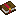

Катана
Три удара, которые никогда не повторяются подряд. Парирование, после которого враг получает свой же урон. И ульта, от которой в горе остаётся тоннель на 35 блоков.
Стойка
Модель прямо из мода: катана и две руки, семь анимаций. Жми мышью по сцене как в игре. ЛКМ берёт случайный удар, но никогда тот же, что был только что. Shift + ПКМ держишь секунду и отпускаешь.
Парирование
Враг замахивается, скелет натягивает лук, крипер шипит. Жми в момент удара. Поймал: урон отменён, вокруг вспыхивает кольцо искр, а атакующий получает столько же, сколько хотел нанести тебе. Скелета можно убить его же стрелами.
Мировой разрез
Вертикальная дуга 10 блоков в высоту и 3 в ширину летит по взгляду 4,5 блока за тик, пока не пройдёт 35. Всё, что мягче обсидиана, режется. Обычный блок падает с шансом 50%, как будто его сломали незеритовой киркой. Хранилища и важные блоки падают всегда. Моб в дуге получает 25 урона. Каждый разрез стоит катане 67 прочности, так что с почти сломанной катаной ульта не сработает.

Мировой разрезКрафт
Железный меч в угол, два щита, два слитка по диагонали. Клинок куётся из меча, щиты уходят на гарду.
История
Достижения
Скрытые, как в игре: пока не получишь, не видно, что это. Все четыре можно взять прямо на этой странице.
Жми по надписи.